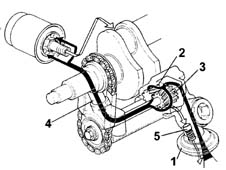

DESCRIPTION OF COMPONENTS
- Path
- Descriptions > 10 ENGINE > 1084 ENGINE LUBRICATION > 1084B ENGINE OIL LUBRICATION CIRCUIT > DESCRIPTION OF COMPONENTS
- Kind
- system description
- Applies to
- engines: 3.0 V6, 3.2 V6; all production periods
- Interactive page
- https://sloeber94.github.io/elrnDB-lThss/en/#/617207
Applies to: engines: 3.0 V6, 3.2 V6; all production periods
ENGINE OIL PUMP
Operation
General remarks
The engine lubrication circuit is pressurised by a rotary gear pump fastened at the bottom to both front main bearing caps.
The pump is operated by a silent chain drive that transmits drive from the crankshaft to the pump drive gear.

- 1 - Suction head.
- 2 - Driven gear.
- 3 - Drive gear.
- 4 - Duct carrying oil to filter.
- 5 - Oil pressure limit valve.